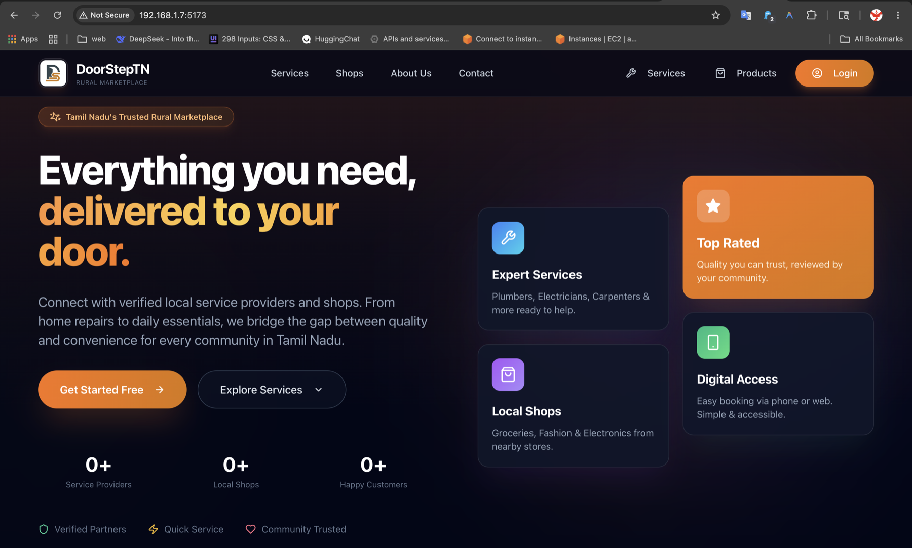
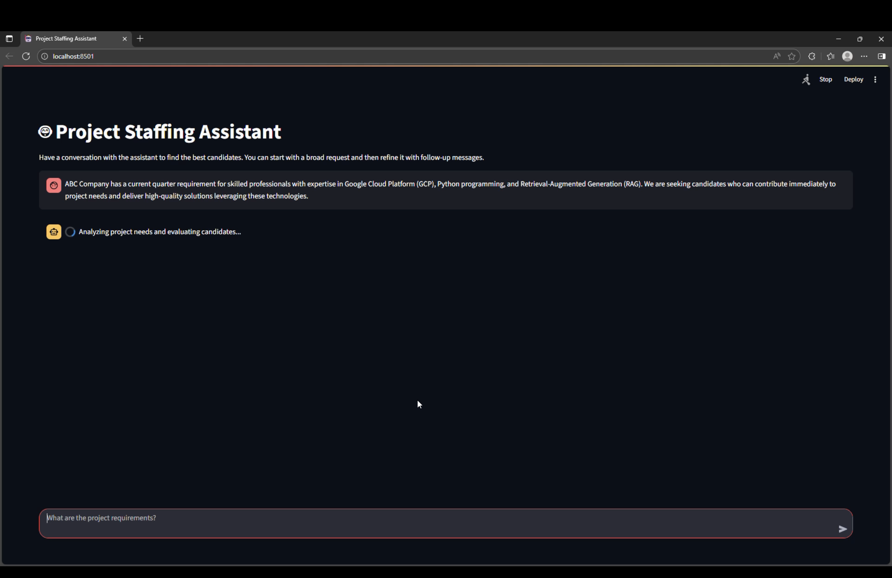

Search & Retrieval
Hybrid vector and lexical retrieval, query planning, reranking, filters, and evaluation built around real user intent.
- pgvector & HNSW
- BM25 & rank fusion
- LLM query planning
Available for ambitious AI & data work
AI Search & Data Systems Engineer working across retrieval, ETL, APIs, and product interfaces. I turn noisy data and ambiguous queries into dependable, production-ready experiences.
What I do
My work connects the data underneath a system, the intelligence that interprets intent, and the interface where people feel the result.
Hybrid vector and lexical retrieval, query planning, reranking, filters, and evaluation built around real user intent.
Incremental, multi-company pipelines that normalize changing source data, enforce quality, and publish safely.
APIs, developer documentation, analytics, and user-facing applications that turn complex infrastructure into a clear product.
Featured work
I built Querix as a production semantic product-search platform—from source-data preparation and safe publishing, through tenant-isolated hybrid retrieval, to the customer website, developer docs, and private analytics surfaces.
 2.56% CER
2.56% CER
An end-to-end workflow turning historical manuscript images into structured, searchable text with layout analysis, transfer learning, and PageXML.

Web + AndroidA cross-platform rural services marketplace with a React web app, Kotlin Android app, shared Express API, role-based access, and real-time notifications.

RAG + rerankingA retrieval-driven assistant that converts free-form project requirements into ranked candidates, skill gaps, training suggestions, and readiness estimates.
Focused toolkit
A deliberately focused stack grounded in the work above.
A little about me
I enjoy hard, connected problems: how data becomes trustworthy, how retrieval stays relevant, how services fail safely, and how a complicated backend becomes intuitive for the person using it.
That systems view lets me move comfortably from schemas and pipelines to ranking behavior, API contracts, operational tooling, and the final interface.
Let’s build something useful